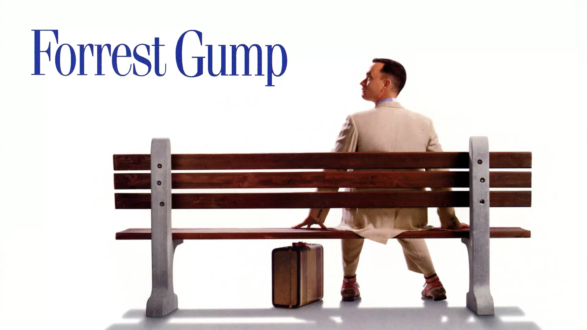

بهترین فیلم های تاریخ
A place full of fun
A place full of fun
فیلم ها فقط برای سرگرمی نیستند در واقع به عقیده من فیلم ها برای این هستند که درس
جدیدی به ما بدهند، دنیای دیگری به ما نشان بدهند یا تجربه زندگی دیگری به ما بدهند و
من به این منظور فیلم میبینم و از فیلم هایی که 1 ساعت بعد از تماشای فیلم درصد بالایی
از آن فراموش میشود لذت نمیبرم و سعی میکنم چنین فیلم هایی نبینم.
مطمئنا افرادی که فیلم ها را نه فقط به منظور سرگرمی بلکه با آنها زندگی میکنند با افراد
عادی تفاوت بسیاری دارند
در این مقاله فیلم هایی معرفی میشود که امیدوارم از آنها نهایت لذت را ببرید و به شخصه
این فیلم ها تاثیر بسیاری روی بنده گذاشته و قطعا هیچوقت آنها را فراموش نمیکنم.
1. Furrest Gump

خیلی کم یادم میاید که درحین فیلم گریه ام بگیرد (این در حالیست که برای فیلم های اینترستلار و لیست شیندلر گریه نکردم) ولی در حین دیدن فیلم فارست گامپ دوبار گریه کردم، این فیلم هجومی از احساسات گوناگون است و انسانیت از آن میبارد اگر یک روز آدم فضایی ها با ما ارتباط برقرار کردند باید این فیلم را نشان آنها بدهیم.